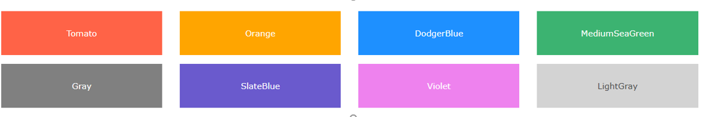
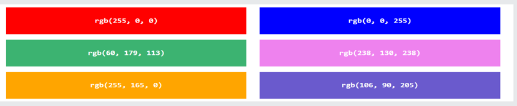
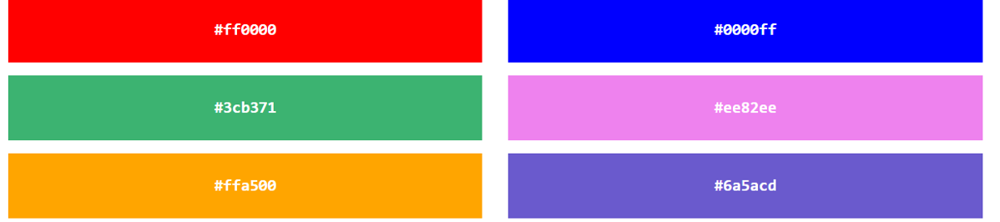

HTML umumiy olganda 140 dan ziyot ranglar bilan ishlayoladi va hali hamon ishlab kelmoqda.
Quyida siz ulardan ba'zi eng ko`p ishlatilinuvchilarni ko`rib chiqishingiz mumkin.

HTMLda ranglar RGB qiymatlari, HEX qiymatlari, HSL qiymatlari, RGBA qiymatlari va HSLA qiymatlari
yordamida ham belgilanishi mumkin. Har bir parametr (qizil, yashil va ko'k) rangning intensivligini
0 dan 255 gacha bo'lgan qiymat bilan belgilaydi. Bu 256 x 256 x 256 = 16777216 rang mavjudligini anglatadi!
Masalan, rgb(255, 0, 0) qizil rangda ko'rsatiladi, chunki qizil rang eng yuqori qiymatga (255), qolgan ikkitasi
(yashil va ko'k) 0 ga o'rnatiladi. Yana bir misol, rgb(0, 255, 0) yashil rangda ko'rsatiladi,
chunki yashil rang eng yuqori qiymatga (255), qolgan ikkitasi (qizil va ko'k) 0 ga o'rnatiladi. Qora rangni ko'rsatish uchun
barcha rang parametrlarini 0 ga o'rnating, masalan: rgb(0, 0, 0). Oq rangni ko'rsatish uchun barcha rang parametrlarini
255 ga o'rnating, masalan: rgb(255, 255, 255).

HEX rang qiymatlari
HTMLda rangni shakldagi o'n oltilik qiymatdan foydalanib belgilash mumkin:# rrggbb
Bu erda rr (qizil), gg (yashil) va bb (ko'k) 00 va ff o'rtasidagi o'n oltilik qiymatlardir (o'nlik kasr 0-255 bilan
bir xil). Masalan, #ff0000 qizil rangda ko'rsatiladi, chunki qizil rang eng yuqori qiymatga (ff), qolgan ikkitasi
(yashil va ko'k) 00 ga o'rnatiladi. Yana bir misol, #00ff00 yashil rangda ko'rsatiladi, chunki yashil rang eng
yuqori qiymatga (ff), qolgan ikkitasi (qizil va ko'k) 00 ga o'rnatiladi. Qora rangni ko'rsatish uchun barcha rang
parametrlarini 00 ga o'rnating, masalan: #000000. Oq rangni ko'rsatish uchun barcha rang parametrlarini ff ga
o'rnating, masalan: #ffffff.
